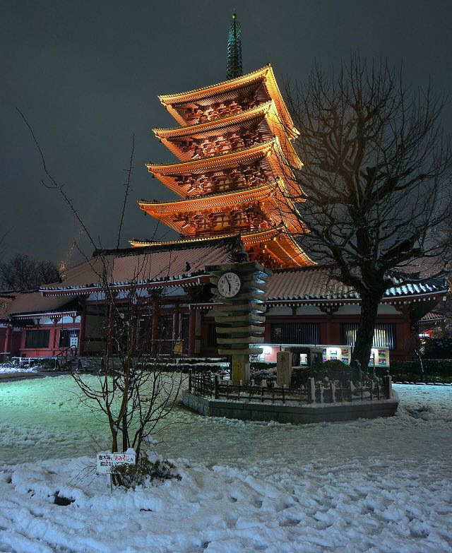
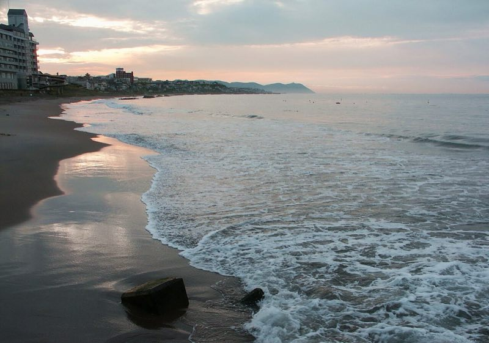
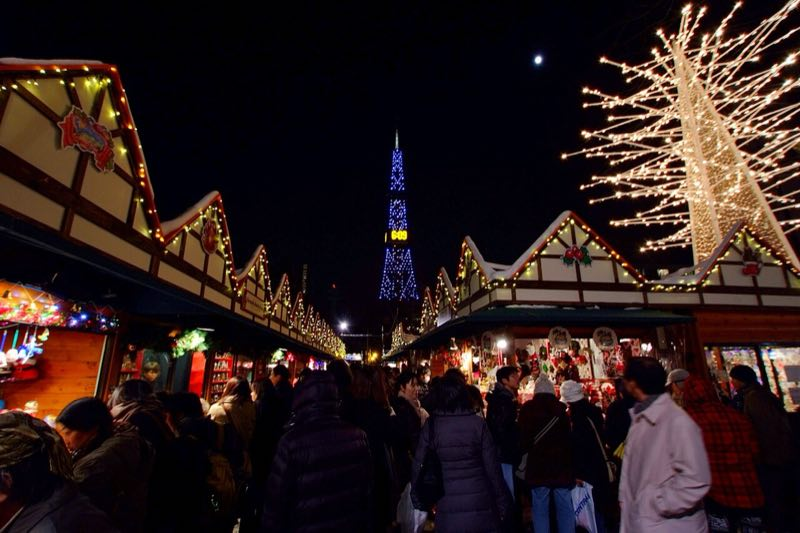
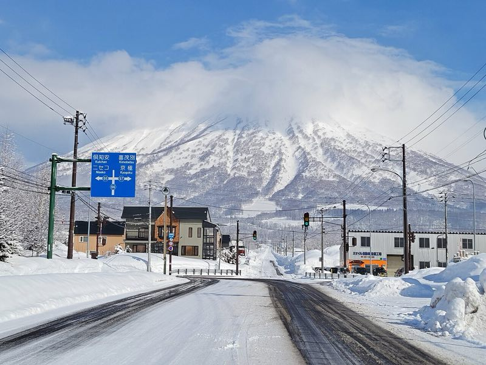
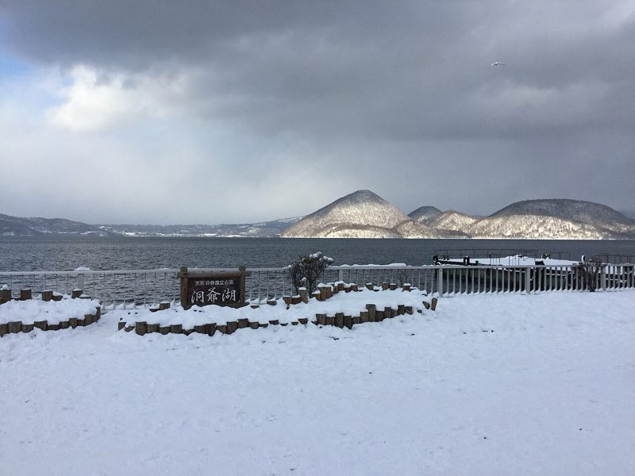

DAY 01/ 0812.22 周二
抵达东京，先吃一顿 A5 和牛
Tokyo
抵达羽田或成田，坐京急或京成直达浅草，入住。
坐银座线到银座，逛丸之内仲通的香槟金灯树，走到东京站丸之内驿舍看夜景。
燒肉 うしごろ 银座店，A5 和牛烤肉。
确认第二天在上野站坐的新干线和后天特急北斗的座位。
备选想先吃寿司就换成银座「鮨 むら山 別館」，渋谷名店「鮨 サブライム」一系，omakase 价格相对友好。
2026.12.22 → 12.29 · 3 人 · 东京进 · 札幌出
From Tokyo, northbound, for sushi, snow and hot springs.
坐新干线一路往北到北海道。每天至少一顿专程去吃的饭：寿司、A5 和牛、成吉思汗烤羊肉、海胆丼。滑三天雪，六晚住房间自带温泉的地方，平安夜和圣诞节在札幌。
3 人（一对情侣 + 1 位朋友），其中 1 人有 Epic Pass。东京和札幌住整套 Airbnb，函馆、二世谷、洞爷湖住房间带私汤的温泉酒店。价格整理于 2026-11-02，标「估算」的以餐厅和官网为准。
Route · 约 1,500 km
东京到新千岁机场，全程铁路、巴士加一段出租车，不需要在雪地里开车。往下滚，线会一段一段画出来。
Eight days · 12.22 – 12.29
每一天是一个章节，往下滚会一张叠着一张。每天绿色的「正餐」是这一天最值得吃的一顿，时间是建议时刻，班次以 12 月时刻表为准。
DAY 01/ 0812.22 周二
Tokyo
抵达羽田或成田，坐京急或京成直达浅草，入住。
坐银座线到银座，逛丸之内仲通的香槟金灯树，走到东京站丸之内驿舍看夜景。
燒肉 うしごろ 银座店，A5 和牛烤肉。
确认第二天在上野站坐的新干线和后天特急北斗的座位。
备选想先吃寿司就换成银座「鮨 むら山 別館」，渋谷名店「鮨 サブライム」一系，omakase 价格相对友好。
DAY 02/ 0812.23 周三
Hakodate
从浅草坐银座线到上野站（约 5 分钟），买好铁路便当，坐隼号到新函馆北斗，约 4 小时，中途穿过海底 240 米的青函隧道。
换函馆 Liner 进市区，函馆限定的 Lucky Pierrot 汉堡当点心。
元町八幡坂（坡道一路通到海港），东正教堂，金森红砖仓库。
函馆山缆车，日落前后的夜景最好看（往返 ¥1,800）。
海上巨型圣诞树点灯（函馆圣诞幻想节，到 12/25）。
鮨 島うた。
打车约 10 分钟回汤之川渚亭，泡阳台的露天温泉，看海上的渔火。
上野→新函館北斗
はやぶさ · 約4h · 青函トンネル経由
备选想更随意可以吃五棱郭塔附近的回转寿司「旬花」，函馆鱼市场直送，11:00–21:00。
DAY 03/ 0812.24 周四 · 平安夜
Hakodate → Sapporo
在阳台的露天汤里看海上日出（12 月底约 7 点日出）。
打车约 15 分钟去函馆朝市，早餐吃海胆专门店「うにむらかみ」的海胆丼，或者钓活乌贼现切。酒店含早餐，想留肚子就只喝杯咖啡。
特急北斗 函馆 → 札幌，约 3 小时 45 分，一路沿着内浦湾。车上买森站名物「いかめし」（鱿鱼饭）当午餐。
到札幌，入住休息。
大通公园慕尼黑圣诞市集，白色灯树节（都到 12/25）。
すし善 本店，平安夜 omakase。
函館→札幌
特急北斗 · 約3h45m · 全車指定
备选想吃蟹就换成薄野的螃蟹会席老店「氷雪の門」。另外，北海道的海胆夏天才当季，冬天吃到的多是外地货；冬天当季的是鳕鱼白子、牡蛎和螃蟹。
DAY 04/ 0812.25 周五 · 圣诞
Otaru · Sapporo
二条市场吃海鲜早餐。
快速列车 札幌 → 小樽，约 35 分钟。
小樽运河的煤气灯，堺町通（北一硝子、音乐盒堂）。
伊勢鮨 午餐。
LeTAO 本店吃甜点，买双层芝士蛋糕。
回札幌，17:00 去だるま本店排队吃成吉思汗。
圣诞市集最后一晚，营业到 21:00。
薄野「收尾芭菲」：札幌人喝完酒用芭菲收尾的习惯。
札幌⇄小樽
快速エアポート · 約35分
DAY 05/ 0812.26 周六
Niseko
札幌坐 JR 经小樽到俱知安，约 2 小时。
打车约 15 分钟到ひらふ亭，先寄存行李（15:00 入住）。
取预订好的雪具，从酒店直接上 Grand Hirafu 开滑，山上餐厅吃午饭。
办入住，泡房间里的温泉，窗外是羊蹄山或雪场。
酒店自助晚餐。
还有力气就去夜滑（灯光雪道开到约 20:30），回来泡酒店的露天大浴场。
札幌→小樽→倶知安
函館本線 · 約2h
DAY 06/ 0812.27 周日
Niseko United
酒店早餐，从门口直接上雪道。
初学者上午半天课，其他人去 Hanazono 找粉雪。
山上午饭，天晴能看到「虾夷富士」羊蹄山。
坐接驳巴士去 Niseko Village 或 Annupuri 换换雪道（All Mountain 雪票含接驳）。树林区只从开放的 Gate 进入。
回酒店泡房间里的温泉，换衣服。
打车约 5 分钟去 Sushi Shin by Miyakawa。
晚餐酒店方案含这晚的自助，但 Sushi Shin 更值得，这晚就不在酒店吃。
缓冲这天不换住处。前几天遇到暴风雪停运，可以把行程往这里挪。
DAY 07/ 0812.28 周一
Rusutsu → Lake Toya
退房，提前约好的出租车从ひらふ亭开到留寿都，约 40 分钟。
带实体 Epic 卡和带照片的证件，在售票窗口换票，滑到下午。
打车约 30 分钟到洞爷湖温泉（要提前约车）。
入住湖之栖，泡房间的露天温泉，看湖上天黑下来。
晚餐自助。
顶楼的无边际露天大浴场，夜里看湖对岸的灯火。
ルスツ→洞爺湖温泉
約30分 · 要予約
注意12 月下旬二世谷到留寿都的接驳车还没开（往年 1/3 起），所以早上打车，要提前约。
DAY 08/ 0812.29 周二
New Chitose Airport
在房间的露天汤里看清晨的湖，早餐自助。
湖边散步，天晴看得到湖中的中岛和远处的羊蹄山。
道南巴士到 JR 洞爷站，约 20 分钟。
特急北斗 洞爷 → 南千岁，约 1 小时 20 分，再换 JR 坐一站到新千岁机场。
机场吃最后一顿，买伴手礼，办免税。
国际航班。12/29 是日本年末出境高峰，至少提前 3 小时到机场。
洞爺→南千歳→新千歳空港
特急北斗 · 約1h20m · 全車指定
Food · 按城市
每人每餐大约多少钱写在后面。标「估算」的是按同类店推的，订之前以餐厅为准。首选是攻略里安排的那一家，其余是备选。
二世谷冬季热门餐厅一般提前约 3 个月开放预约，12 月下旬的位子现在就要订。
冬天吃什么最当季：鳕鱼白子、牡蛎、扇贝、螃蟹、寒鰤。北海道的海胆夏天才当季，冬天吃到的多是外地货，在寿司店可以直接问师傅今天最好的是什么。
Stays · 3 人 · ♨ 私汤 6 晚
温泉地都住房间自带温泉的地方，这是小红书上「北海道 雪季 私汤」最常见的住法：泡在自己房间的汤里，窗外是海、雪山或湖。函馆订两间，情侣和朋友分开住；二世谷和洞爷湖这两晚能订到的私汤房不能单人订，所以 3 人一间。价格是 2026-11-02 在一休和 Booking 查到的这几晚总价，以下单页为准。



定山溪和小樽的私汤旅馆（翠山亭俱乐部、藏群、宏乐园）这两晚都订满了。住市区也方便平安夜吃すし善、逛圣诞市集。

坐忘林、甘露之森这两晚的私汤房订不到；楽水山只有 2 人套房。

原来的登别泷乃家，带私汤的两种房间这晚已经订满。
Ski · 约 3 days · 2 resorts
12/26 中午到 12/27 在二世谷，12/28 用你的 Epic Pass 在留寿都滑到下午。Epic 在日本的另一个合作雪场是长野的白马，不在这次路线上。
December · 12.22 – 12.29
哪些活动在办、哪些价格会变。★ 是行程里会去的那一天。手机上可以左右滑动。
Budget · 人均 · 日本境内
按 3 人、上面的首选店和住宿估算，国际机票另算。汇率按 1 元人民币 ≈ 23 日元。
单程票更便宜。留寿都前后两段出租车本来就不在通票里。JR 北海道的特急全车指定席，要先订座。
Weather · 12 月下旬
往年 12 月下旬的平均最低和最高气温（°C），山上和清晨还会更低。下午 4 点左右天就黑了。
Booking · 按紧急程度
勾选只保存在你自己的浏览器里，别人打开这个页面看不到你的进度。
Field notes
准时到，迟到可能被取消；取消要提前，很多店会收取消费。过敏和忌口在预约时就说明。
JR 北海道遇到暴风雪会整段停驶。D6 不换住处，可以当缓冲。每天出发前看「JR 北海道运行情报」。
先洗净再入池，毛巾不进水。有纹身先问店家。
日本的民宿要登记护照，多是自助入住，提前拿好房东发的入住说明。垃圾按规定分类，晚上 10 点后保持安静。
高级餐厅和酒店基本都能刷卡；成吉思汗小店、出租车和巴士要备现金。
北海道 2026/4/1 起收住宿税，按人按晚另付；出境税 2026/7/1 起涨到 ¥3,000。
2026 年中日航线大量减班，从中国大陆出发要早订。12/29 是日本年末出境高峰。
下午 4 点左右日落，滑雪和户外景点尽量排在上午和中午。


.jpg){kind=link}
.jpg){kind=link}
.jpg){kind=link}